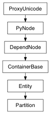

class counterpart of mel function partition
This command is used to create, query or add/remove sets to a partition. If a partition name needs to be specified, it is the first argument, other arguments represent the set names. Without any flags, the command will create a partition with a default name. Any sets which are arguments to the command will be added to the partition. A set can be added to a partition only if none of its members are in any of the other sets in the partition. If the -re/render flag is specified when the partition is created, only ‘renderable’ sets can be added to the partition. Sets can be added and removed from a partition by using the -addSet or -removeSet flags. Note:If a set is already selected, and the partition command is executed, the set will be added to the created partition.
Add a set to this partition. To be added to a partition, a set must be mutually exclusive with all of the other sets in the partition. If there are any conflicting elements, then the add will fail.
| Parameters: |
|
|---|
Derived from api method maya.OpenMaya.MFnPartition.addMember
Undo is not currently supported for this method
New partition can contain render sets. For use in creation mode only. Default is false. Can also be used with query flag - returns boolean.
Derived from mel command maya.cmds.partition
Returns true if this partition is a render partition.
| Return type: | bool |
|---|
Derived from api method maya.OpenMaya.MFnPartition.isRenderPartition
Remove a set from this partition.
| Parameters: |
|
|---|
Derived from api method maya.OpenMaya.MFnPartition.removeMember
Undo is not currently supported for this method